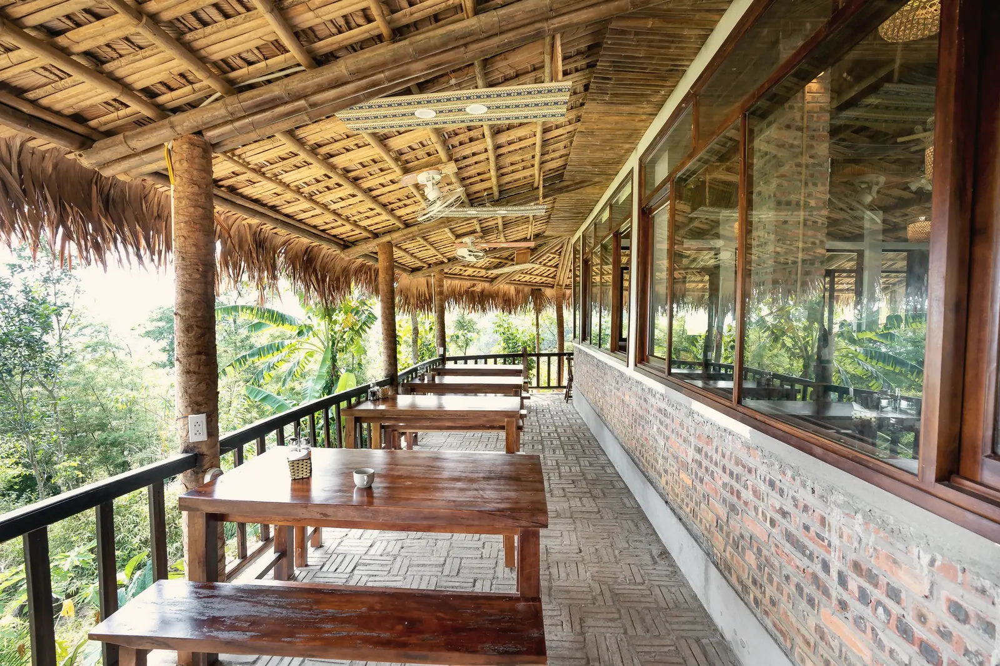
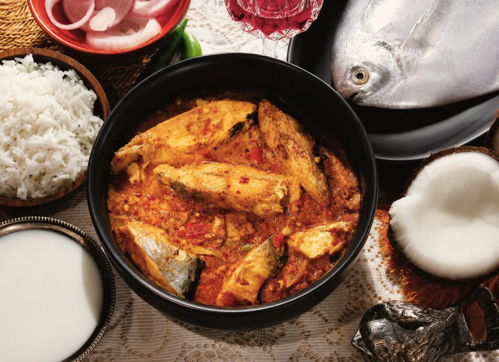
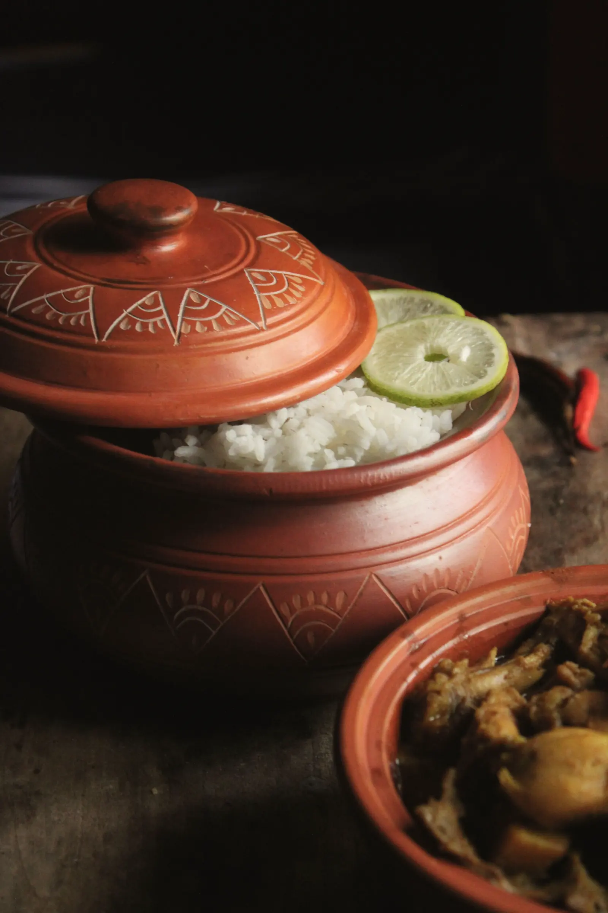
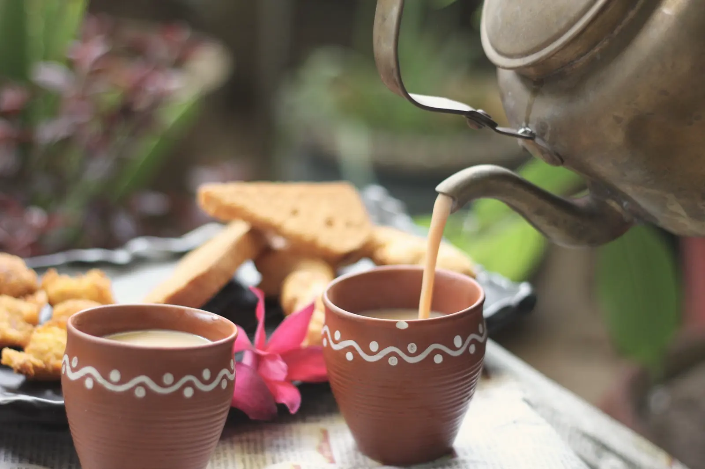
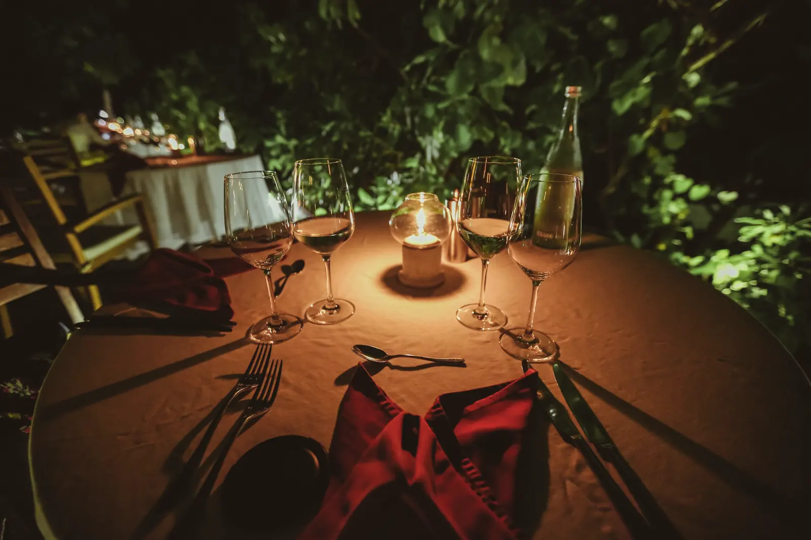

The Long Veranda
One dining room, open on three sides, under a thatched roof. The cooking is from Sylhet and Moulvibazar, and the vegetables come from the estate garden and the market in town.
Before lunch
Breakfast · Lunch · Dinner
Food from here
Our cooks are from the villages around Sreemangal. They cook the way their families do: plenty of greens, fish from the haor, shatkora in the beef, six bhortas on the table at lunch. We keep a short list of simpler things for children and anyone who wants them.
Breakfast runs 07:00–10:30, lunch 12:30–15:00, dinner 19:00–22:00. Outside guests are welcome for lunch with a day’s notice.
- Shatkora beef সাতকরা গরুslow-cooked with the bitter wild citrus of Sylhet
- Hilsa in mustard সর্ষে ইলিশwhen the season is right, never frozen
- Haor fish of the day হাওরের মাছfrom the wetlands, cooked as the cook decides
- Bhorta platter ভর্তাsix mashes, from smoked aubergine to dried shrimp
- Akhni pilau আখনিthe Sylheti one-pot rice, for Fridays
- Winter pitha পিঠাwith date-palm jaggery, December to February
Halal kitchen. Vegetarian and no-chilli versions of most dishes. Please tell us about allergies when you book.



The Tea Room · 16:00–19:00
Afternoon tea, from the garden outside
Black tea from this estate and two neighbours, brewed strong with milk in clay cups, or light and clear in porcelain. With singara, pitha in winter, and something from the oven.
Included for staying guests. Tasting flights of first- and second-flush teas: ৳1,200.
Private
Dinner by the lake
One table at the water’s edge, lanterns, and a set menu cooked for you. For anniversaries, proposals, or simply a quiet night. ৳9,500 for two.
